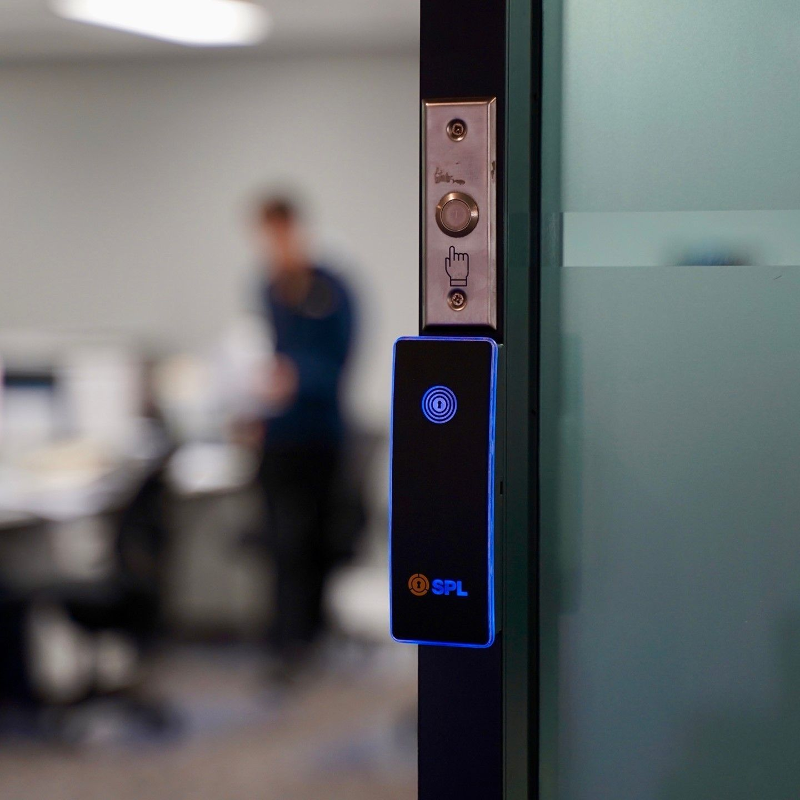
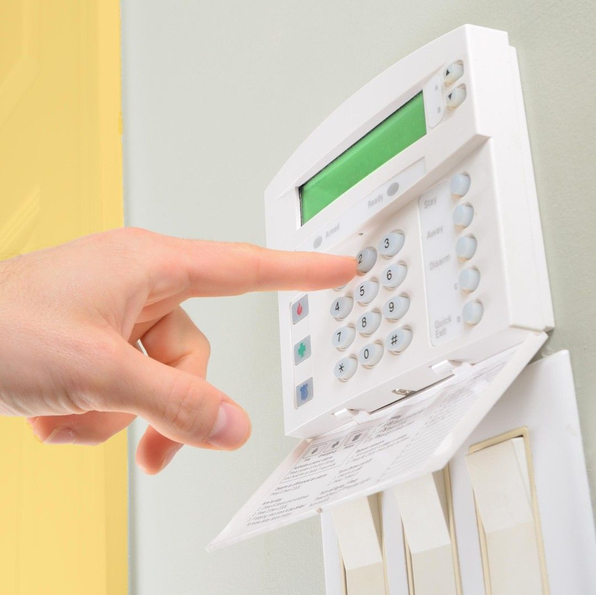

On this page
AT A GLANCE
At SPL Security Solutions, our 24/7 mobile locksmith service in Surfers Paradise is here to assist you with all your lock and key needs, day or night.
Get A Free Quote Now!

Locksmith Services Surfers Paradise & Surrounds
At SPL Security Solutions, our 24/7 mobile locksmith service in Surfers Paradise is here to assist you with all your lock and key needs, day or night. Whether you’re locked out of your home, need urgent lock repairs, or require a replacement key, our professional locksmiths are ready to help.
We understand that emergencies can happen at any time, which is why our mobile service ensures prompt, on-site solutions when you need them most. From residential lockouts to commercial security upgrades and automotive key programming, we offer a full range of locksmith services.
Call us on (07) 5588 8111 for fast and reliable assistance wherever you are in Surfers Paradise.
We provide practical security solutions to protect Surfers Paradise homes, including lock upgrades, reliable door hardware and emergency assistance. Whether it’s improving entryway security or addressing urgent needs, we prioritise your home’s safety.
Secure your business in Surfers Paradise with tailored solutions like advanced locking systems, access control and high-security locks. Our services focus on safeguarding assets while maintaining efficient operation.
Keep your vehicle secure with services like key replacements, lock repairs and transponder programming. We provide solutions for modern and traditional car locking systems in Surfers Paradise.
Protect access to sensitive areas with restricted key systems that prevent unauthorised duplication. These systems are ideal for businesses and households in Surfers Paradise seeking enhanced control over security.
Ensure the security of your valuables with durable safes designed for theft and fire resistance. We offer installation, maintenance, and access solutions to meet your specific requirements in Surfers Paradise.
Integrate cutting-edge security solutions, such as CCTV, alarms and access control, to create a fully protected property. Our security systems are tailored to provide robust protection for homes and businesses in Surfers Paradise.
From robust deadbolts to advanced locking systems, our lock hardware solutions in Surfers Paradise ensure maximum security for doors and entry points. We help you find the right fit for your property.
Upgrade your doors with durable and stylish handles, hinges, and closers that offer both functionality and security. Our range of door hardware solutions suits a variety of properties in Surfers Paradise.
Our collection features fire-rated hardware, efficient door closers, and stylish handles, offering functional and aesthetic solutions for traditional and contemporary interiors in Surfers Paradise.
Emergency Locksmith Services
Emergencies can happen at any time, leaving you in need of quick locksmith services. Here are common scenarios where our emergency locksmiths can help you out of a situation:
- Locked Out
Whether it’s your home, car or office, being locked out can happen unexpectedly. Our emergency locksmiths can get you back inside quickly without damage. - Broken or Stolen Keys
Lost, stolen or broken keys can leave you stranded or compromise your property’s security. An emergency locksmith can replace or rekey locks on-site. - Damaged Locks
Locks damaged due to wear and tear or attempted break-ins often need immediate attention to restore security and functionality. - Security System Failures
If electronic locks or access control systems malfunction, our emergency locksmith can diagnose and resolve the issue to secure your property. - Safe Access Issues
When you’re locked out of a safe or need to change its combination urgently, we can provide the necessary expertise you need.

Contact Details
24/7 Emergency Locksmiths or Security Tech


Trading Hours
Retail Shop

Frequently Asked Questions
-
What should I do if I’m locked out of my home at night?
If you’re locked out of your home, stay calm and avoid trying to force the door open, as this may cause damage. Contact an emergency locksmith who can safely and efficiently unlock the door for you.
-
How can I prevent lock-related emergencies?
Regular maintenance of locks and keys, including checking for wear and tear, can help prevent unexpected issues. Having a spare key stored securely or investing in smart locks with keyless entry can also reduce the chances of emergencies.
Locksmith & Security Solutions Gold Coast, Brisbane & Northern NSW